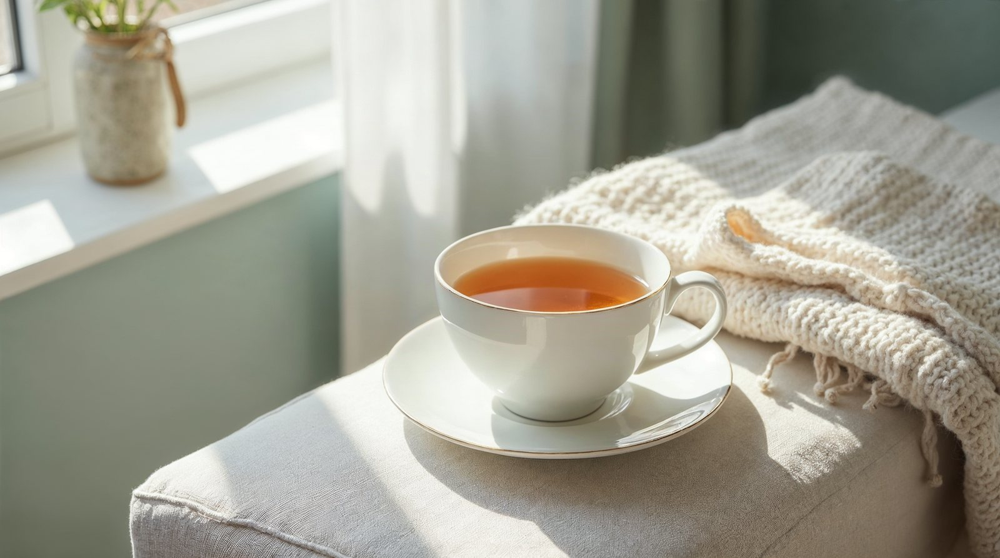
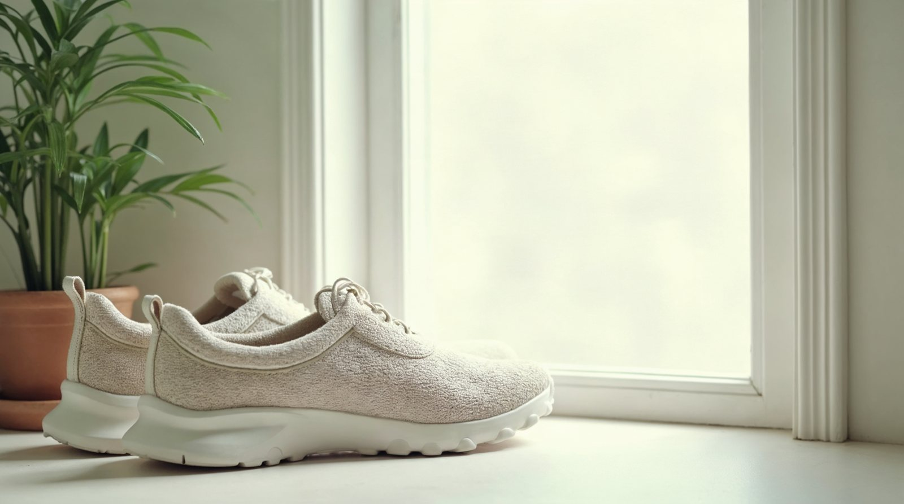

이종호 한의사 감수좋은꿈참사랑한의원 대표원장 (한의사 면허번호 19769)발행 2026-11-26 · 수정 2026-11-26
이 글의 차례
횡단보도 앞에서 신호를 기다리는데 옆 차선에서 브레이크 소리가 끽 하고 납니다. 아무 일도 없었는데 심장이 쿵 내려앉고 손에 땀이 맺힙니다. 몇 주 전 겪은 일이 머릿속에서 다시 재생되고, 그날 밤에는 같은 장면이 꿈에 나와 새벽에 눈을 뜹니다.
진료실에서 이런 말씀을 듣습니다. "다친 데는 다 나았다는데 왜 아직도 이럴까요." "별일 아닌 걸로 유난 떠는 것 같아 누구한테 말도 못 했어요." 그 말을 들으면 그동안 혼자 얼마나 조마조마하게 지내셨을까 싶어 마음이 무거워집니다.
교통사고, 넘어짐, 화재, 폭력, 갑작스러운 이별이나 사고 현장을 목격한 일처럼 몸과 마음이 크게 놀란 뒤에는 한동안 장면이 떠오르고, 작은 소리에도 깜짝 놀라고, 잠이 얕아지는 일이 흔합니다. 이런 모습을 통틀어 외상 뒤 스트레스 반응이라고 부릅니다.
먼저 말씀드리고 싶은 것은, 이런 반응은 마음이 약해서 생기는 것이 아니라는 점입니다. 위험에서 나를 지키려던 몸의 장치가 아직 경계를 풀지 못한 모습에 가깝습니다. 이 글에서는 그 반응의 모양과 몸의 신호, 그리고 함께 살필 수 있는 것들을 차근차근 펼쳐 보려 합니다.
왜 놀란 뒤 장면이 떠오르고 잠이 깰까요
위험한 순간이 오면 몸은 순식간에 비상 모드로 바뀝니다. 심장이 빨리 뛰고, 근육이 단단해지고, 눈과 귀가 예민해집니다. 도망치거나 버티기 위해 꼭 필요한 반응입니다. 위험이 지나가면 이 비상 모드는 보통 며칠에서 몇 주 사이에 천천히 꺼집니다.
그런데 충격이 컸거나, 갑작스러웠거나, 내 힘으로 어쩔 수 없었던 일이라면 몸이 경계를 푸는 데 시간이 더 걸립니다. 이미 지나간 일인데도 몸은 '아직 위험할 수 있다'고 여기고 계속 주변을 살핍니다. 그래서 작은 소리에도 놀라고, 비슷한 장소나 냄새만으로 그날의 감각이 되살아납니다.
잠은 이 경계가 가장 먼저 드러나는 곳입니다. 잠들기 직전 장면이 떠오르거나, 깊이 잠들지 못하고 자주 깨거나, 꿈에서 비슷한 일이 반복되기도 합니다. 잠이 모자라면 낮 동안 마음의 여유가 줄고, 여유가 줄면 다시 쉽게 놀라는 고리가 생깁니다.
소화도 함께 흔들립니다. 비상 상태에서는 위장의 움직임이 뒤로 밀리기 때문에 입맛이 없고, 명치가 막힌 듯하고, 대변이 묽었다 굳었다 하는 분이 많습니다. 목과 어깨, 턱이 늘 굳어 있고 두통이 잦아지기도 합니다.
한의학에서는 크게 놀란 뒤 가슴이 두근거리고 잘 놀라는 상태를 '경계(驚悸)'라 불렀고, 놀람이 심(心)과 담(膽)을 흔들어 마음이 편히 머물지 못한다고 설명해 왔습니다. 이름은 달라도 놀람이 몸에 남는다는 것을 옛사람들도 보았던 셈입니다.
흔한 반응, 오래가는 반응은 어떻게 다를까요
큰일을 겪은 뒤 몇 주 동안 장면이 떠오르고 잠이 얕은 것은 많은 분이 겪는 자연스러운 과정입니다. 시간이 지나면서 떠오르는 횟수가 줄고, 떠올라도 덜 흔들리고, 잠이 조금씩 돌아온다면 몸이 제 속도로 회복하고 있는 모습입니다.
반면 한 달이 넘어도 장면이 원치 않게 자꾸 떠오르고, 그 일과 관련된 장소나 대화를 피하느라 생활 반경이 줄고, 늘 날이 서 있고, 잠이 계속 무너진다면 조금 더 주의 깊게 볼 때입니다. 정신건강의학과에서는 이런 상태를 외상 후 스트레스 장애라는 이름으로 진단하고 치료합니다.
우울감과도 겹치기 쉽습니다. 그 일 이후로 즐겁던 일이 시들해지고, 나를 탓하는 생각이 많아지고, 사람을 만나기 싫어진다면 우울감도 함께 살펴야 합니다. 술로 잠을 청하는 날이 늘었다면 그것도 중요한 신호입니다.
몸의 병이 겹쳐 있을 수도 있습니다. 사고 뒤라면 머리나 목을 다친 영향으로 어지럼과 두통이 이어질 수 있고, 두근거림이 심하다면 심장이나 갑상선 쪽 확인이 필요할 때도 있습니다. 그래서 처음에는 다친 부위와 몸의 검사를 먼저 확인했는지부터 여쭙니다.
예를 들면 이런 모습입니다
실제 어느 분의 사연이 아니라, 진료실에서 자주 보는 모습을 바탕으로 그려 본 장면입니다.
예를 들어 운전 중 사고를 겪은 분이라면 다친 곳은 아물었는데 운전대를 잡으면 손이 굳고, 조수석에 타도 브레이크를 밟는 시늉을 하게 됩니다. 이럴 때는 운전을 억지로 다시 시작하기보다 짧은 거리, 익숙한 길, 낮 시간부터 천천히 넓혀 가는 계획을 함께 세웁니다.
계단에서 크게 넘어진 분이라면 그 뒤로 계단 앞에서 다리가 먼저 멈추고, 난간을 꼭 잡지 않으면 발을 떼기 어렵습니다. 몸이 기억하는 두려움은 말로 설득되지 않기에, 저는 다리와 허리의 긴장을 먼저 풀고 한 칸씩 늘려 가는 방법을 권하곤 합니다.
가까운 사람의 사고 소식을 갑자기 들은 분이라면 휴대폰 벨소리만 울려도 가슴이 철렁합니다. 직접 겪지 않은 일도 몸에는 충격으로 남을 수 있다는 것을 알려 드리는 것만으로 마음이 조금 놓이는 분이 많습니다.
스스로 살펴보는 질문
아래 질문에 '예'가 여러 개라면 혼자 버티기보다 상담을 받아 보실 때입니다. 진단을 내리는 표가 아니라, 내 상태를 말로 옮기기 위한 거울 정도로 써 주세요.
- 그 일의 장면이나 소리가 원치 않을 때 자꾸 떠오른다
- 그 일과 관련된 장소·사람·대화를 피하게 된다
- 작은 소리에도 깜짝 놀라고 늘 주변을 살피게 된다
- 잠들기 어렵거나 자주 깨고, 비슷한 꿈을 꾼다
- 그 일 이후 기분이 가라앉고 나를 탓하는 생각이 많아졌다
- 이런 상태가 한 달 넘게 이어지고 있다
이 가운데 가장 괴로운 것 하나를 골라 두시면 좋습니다. 장면이 떠오르는 것이 가장 힘든 분도 있고, 장면보다 무너진 잠이나 굳은 어깨가 더 힘든 분도 있습니다. 그 하나가 진료실에서 이야기를 시작하는 문이 됩니다.

놀란 몸은 이렇게 신호를 보냅니다
외상 뒤 스트레스 반응을 마음의 문제로만 보면 몸의 신호를 놓치기 쉽습니다. 진료실에서 하나씩 여쭤 보면 숨이 얕고 한숨이 잦은 분, 가슴 한가운데가 답답한 분, 손발이 차고 땀이 많은 분이 적지 않습니다.
어깨와 목, 턱은 놀람을 오래 붙잡고 있는 자리입니다. 늘 어깨가 귀 쪽으로 올라가 있고, 자고 일어나면 턱이 뻐근한 분이 많습니다. 사고 뒤라면 다친 자리의 통증과 긴장이 얽혀 어디까지가 다친 탓이고 어디부터가 긴장 탓인지 구분하기 어려울 때도 있습니다.
이런 몸의 긴장을 먼저 풀어 주면 장면이 떠오를 때 버틸 힘이 조금 생기는 경우가 있습니다. 마음을 다그치기보다 몸을 먼저 쉬게 하는 것, 저는 그것을 회복의 첫걸음으로 봅니다.
몸이 조금 풀리면 마음도 따라 숨을 돌립니다. 저녁마다 따뜻한 물로 샤워하며 어깨에 물을 오래 맞히는 것, 잠자리에 들기 전 목과 턱의 힘을 의식해서 빼 보는 것처럼 작은 일부터 시작해도 됩니다. 몸이 '이제 쉬어도 된다'는 신호를 자주 받을수록 경계가 풀리는 속도도 조금씩 붙습니다.
반대로 아무렇지 않은 척 바쁘게만 지내면 몸의 긴장은 그대로 쌓입니다. 일부러 일을 더 만들어 생각할 틈을 없애는 분도 계신데, 그럴수록 밤이 되면 한꺼번에 몰려오기 쉽습니다. 낮에 잠깐씩 멈추는 시간을 두시길 권합니다.
먼저 이렇게 여쭙니다
처음 오시면 그 일을 겪은 지 얼마나 되었는지, 다친 곳에 대한 검사와 진료는 받았는지부터 여쭙니다. 사고의 자세한 장면은 말씀하고 싶은 만큼만 하셔도 됩니다. 저는 그 뒤의 하루가 어떻게 흘러가는지가 더 궁금합니다.
잠에 대해서는 잠드는 시각, 깨는 횟수, 꿈의 내용보다는 꿈에서 깬 뒤 다시 잠들 수 있는지를 여쭙니다. 입맛과 소화, 대변, 술과 커피의 양, 두근거림과 땀도 함께 듣습니다.
그리고 양손을 올려 달라고 말씀드립니다. 처음 오신 분이든 다시 오신 분이든 모든 분께 맥을 짚습니다. 맥과 혀, 손발의 온도, 목과 어깨의 굳은 정도를 함께 보며 몸이 얼마나 긴장해 있는지 가늠합니다.
복용 중인 약은 꼭 알려 주세요. 수면제나 항불안제, 항우울제를 드시는 분도 많고, 그 약은 처방한 의사와 상의 없이 줄이거나 끊지 않는 것이 원칙입니다. 저는 그 약을 확인한 뒤 함께 할 수 있는 것을 정합니다.

일상에서 먼저 해 볼 수 있는 것
놀란 몸에는 '안전하다'는 신호를 자주 보내 주는 것이 도움이 됩니다. 거창한 방법보다 매일 비슷한 시각에 반복하는 작은 습관이 그 신호가 됩니다.
- 일어나는 시각을 먼저 고정하고, 잠드는 시각은 졸릴 때로 둡니다
- 숨을 들이쉬는 것보다 내쉬는 것을 길게 합니다(넷 세며 들이쉬고 여섯 세며 내쉬기)
- 장면이 떠오르면 발바닥이 바닥에 닿는 느낌, 손에 쥔 컵의 온도처럼 지금 여기의 감각 다섯 가지를 세어 봅니다
- 해가 있을 때 익숙한 길을 20~30분 걷습니다
- 커피와 술은 줄이고, 잠들기 전 뉴스나 사고 영상은 피합니다
술은 잠을 쉽게 들게 하는 듯해도 새벽에 잠을 깨우고 다음 날 불안을 키우기 쉽습니다. 술로 잠을 청하는 날이 늘었다면 그 사실부터 함께 이야기해 보면 좋겠습니다.
피하던 것을 다시 마주하는 일은 서두르지 않아도 됩니다. 아주 작은 단계부터, 믿을 만한 사람과 함께, 몸이 덜 긴장한 시간대에 해 보시길 권합니다. 무리하게 견디기보다 '조금 불편하지만 할 만한' 정도에서 멈추는 것이 요령입니다.
가족이나 가까운 사람에게 지금 상태를 짧게라도 알려 두시면 좋습니다. "요즘 큰 소리에 잘 놀라" 한마디만으로도 주변이 배려할 수 있는 폭이 넓어집니다. 혼자 감당하려 애쓰기보다 기댈 자리를 하나 만들어 두는 것도 회복의 일부입니다.
한의원에서 함께 살필 수 있는 경우
외상 뒤 스트레스 반응이 일상을 크게 흔들고 있다면 정신건강의학과 진료를 먼저 권합니다. 그 위에서 한의원이 함께 살필 수 있는 경우는 이런 때입니다.
- 정신건강의학과 진료를 받으면서 잠, 소화, 몸의 긴장을 함께 살피고 싶은 경우
- 사고 뒤 다친 곳은 아물었는데 목·어깨·허리의 긴장과 두통이 이어지는 경우
- 놀란 뒤로 두근거림, 명치 답답함, 손발 냉, 식은땀이 잦아진 경우
- 진료를 받기 전, 내 상태를 어디서부터 말해야 할지 정리가 필요한 경우
진찰을 마친 뒤에는 침, 한약 상담, 생활 약속처럼 함께 할 수 있는 것을 정합니다. 한약은 드시는 약을 확인한 뒤 상의합니다. 어떤 방법이든 결과를 미리 약속드리기보다, 다음 진료에서 잠과 몸이 어땠는지 함께 보며 조정합니다.
교통사고 뒤라면 자동차보험 진료 안에서 몸의 통증과 함께 잠과 긴장을 살피는 경우도 있습니다. 어느 쪽이든 놀란 마음을 숨기지 않고 말씀해 주시는 것이 진료의 시작입니다.
이렇게 기록해 오시면 상담이 쉬워집니다
장면이 떠오르는 순간은 머릿속에서 커지기 쉽습니다. 종이에 옮기면 언제, 무엇이, 얼마나 흔들었는지가 보이기 시작합니다. 일주일만 짧게 적어 와 주세요.
- 장면이 떠오른 시각과 그때 있던 곳, 계기가 된 소리나 장면
- 흔들린 정도(0~10)와 몸에서 느낀 곳
- 잠든 시각, 깬 횟수, 다시 잠든 시각
- 커피·술의 양과 마신 시각
- 마음이 조금 가라앉았던 순간(걷기, 대화, 샤워 등)
그 일의 자세한 내용은 적지 않으셔도 됩니다. 기록이 오히려 장면을 자꾸 떠올리게 한다면 시각과 숫자만 적어 오셔도 충분합니다. 빈칸이 있어도 괜찮고, 나머지는 제가 여쭙겠습니다.
놀란 몸이 경계를 푸는 데에는 저마다 다른 시간이 걸립니다. 남들보다 늦다고 조급해하지 않으셨으면 합니다. 다음에 오시면 일주일 동안 적어 오신 '마음이 가라앉았던 순간'부터 함께 보겠습니다.
이런 증상은 먼저 확인이 필요합니다
- 스스로를 해치고 싶은 생각이 들거나, 가슴 통증·숨참이 함께 오는 경우
- 사고 뒤 두통이 점점 심해지거나 팔다리 힘이 빠지고 말이 어눌해지는 경우
이런 신호가 있으면 한의원보다 가까운 병원이나 응급실을 먼저 찾으세요.
스스로를 해치고 싶은 생각이 든다면 ☎ 109에 연락해 주세요.
함께 읽으면 좋은 글
- 교통사고 뒤 운전이 무섭고 장면이 떠오를 때는 어떻게 지내면 되나요?
- 갑자기 숨이 막히고 가슴이 뛰는 공황 같은 발작이 올 때는 어떻게 하나요?
- 기분이 2주 넘게 가라앉고 잠·입맛·흥미가 떨어질 때는 어떻게 살피나요?
- 가까운 사람을 떠나보낸 뒤 잠과 입맛이 돌아오지 않을 때는 어떻게 하나요?

여쭙는 것
- 처음 오시면 그 일을 겪은 지 얼마나 되었는지, 다친 곳에 대한 검사와 진료는 받았…
- 사고의 자세한 장면은 말씀하고 싶은 만큼만 하셔도 됩니다.
- 저는 그 뒤의 하루가 어떻게 흘러가는지가 더 궁금합니다.
생활에서 해 볼 것
- 일어나는 시각을 먼저 고정하고, 잠드는 시각은 졸릴 때로 둡니다
- 숨을 들이쉬는 것보다 내쉬는 것을 길게 합니다(넷 세며 들이쉬고 여섯 세며 내쉬기)
- 장면이 떠오르면 발바닥이 바닥에 닿는 느낌, 손에 쥔 컵의 온도처럼 지금 여기의 감…
한의원에서 함께 살필 것
- 정신건강의학과 진료를 받으면서 잠, 소화, 몸의 긴장을 함께 살피고 싶은 경우
- 사고 뒤 다친 곳은 아물었는데 목·어깨·허리의 긴장과 두통이 이어지는 경우
- 놀란 뒤로 두근거림, 명치 답답함, 손발 냉, 식은땀이 잦아진 경우
먼저 확인이 필요한 신호
- 스스로를 해치고 싶은 생각이 들거나, 가슴 통증·숨참이 함께 오는 경우
- 사고 뒤 두통이 점점 심해지거나 팔다리 힘이 빠지고 말이 어눌해지는 경우
한눈에 보는 표
| 구분 | 핵심 |
|---|---|
| 생활에서 해 볼 것 | 일어나는 시각을 먼저 고정하고, 잠드는 시각은 졸릴 때로 둡니다 숨을 들이쉬는 것보다 내쉬는 것을 길게 합니다(넷 세며 들이쉬고 여섯 세며 내쉬기) |
| 한의원에서 함께 살필 것 | 정신건강의학과 진료를 받으면서 잠, 소화, 몸의 긴장을 함께 살피고 싶은 경우 사고 뒤 다친 곳은 아물었는데 목·어깨·허리의 긴장과 두통이 이어지는 경우 |
| 먼저 확인이 필요한 신호 | 스스로를 해치고 싶은 생각이 들거나, 가슴 통증·숨참이 함께 오는 경우 사고 뒤 두통이 점점 심해지거나 팔다리 힘이 빠지고 말이 어눌해지는 경우 |
자주 묻는 질문
다친 곳이 다 나았는데도 이런 반응이 남을 수 있나요?
남을 수 있습니다. 몸의 상처가 아무는 속도와 놀란 마음이 가라앉는 속도는 다릅니다. 몇 주 동안 장면이 떠오르고 잠이 얕은 것은 흔한 과정이고, 한 달 넘게 이어지거나 생활이 크게 흔들리면 상담을 받아 보시길 권합니다.
그날 일을 자세히 이야기해야 하나요?
그러지 않으셔도 됩니다. 말하고 싶은 만큼만 말씀해 주세요. 한의원에서는 그 뒤의 잠, 소화, 몸의 긴장처럼 지금의 하루를 중심으로 여쭙니다.
정신건강의학과 약을 먹고 있는데 한의원 진료를 함께 받아도 되나요?
함께 받는 분이 많습니다. 드시는 약 이름과 용량을 먼저 알려 주세요. 약은 처방한 의사와 상의 없이 줄이거나 끊지 않고, 한약은 그 약을 확인한 뒤 상의합니다.
잠이 안 와서 술을 조금씩 마시는데 괜찮을까요?
술은 잠을 쉽게 들게 하는 듯해도 새벽에 깨우고 다음 날 불안을 키우기 쉽습니다. 마시는 날과 양을 적어 오시면 잠을 지킬 다른 방법을 함께 찾아보겠습니다.
가족이 사고를 겪었는데 어떻게 도와주면 좋을까요?
"이제 괜찮잖아"라는 말보다 "많이 놀랐지" 하고 먼저 들어 주는 쪽이 도움이 됩니다. 함께 걷기나 같은 시각에 식사하기처럼 일상의 리듬을 같이 지켜 주시고, 진료가 필요해 보이면 함께 와 주셔도 됩니다.
좋은꿈참사랑한의원은 재진 때 지난번 이야기부터 이어서 여쭙니다. 진료시간과 예약은 오시는 길에서 확인하세요.
어디서 상담받을 수 있나요?
좋은꿈참사랑한의원은 서울 동작구 만양로2길 2 신성빌딩 3층·5층(서울 동작구 상도동, 7호선 상도역 3번 출구 근처)에 있습니다. 한의사 3명(이종호 대표원장, 조영기 수석진료원장, 정원영 진료원장)이 진료합니다. 진료시간은 평일 09:30~20:00(점심 13:00~14:00), 토·일·공휴일 09:30~15:00이며, 방문 전 전화로 확인을 권합니다. 예약은 네이버 예약, 카카오톡 상담, 전화 02-815-7510로 받습니다.
이 글은 일반적인 건강 정보이며 개인의 진단이나 치료를 대신하지 않습니다. 증상이 있거나 복용 중인 약이 있다면 진료를 통해 확인하세요. 치료 효과는 개인마다 다를 수 있습니다.
작성 기준: 일반적으로 알려져 있는 건강 정보를 참고해 정리했습니다(대표원장 감수). 증상 기록은 1~2주 동안 하루 1회, 비슷한 시간에 적어 오시면 지난 상태와 비교하기 쉽습니다.